1800–1820s
Fourier analysis
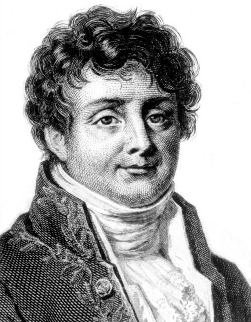
J. Fourier introduces Fourier series and develops the mathematical foundations of Fourier analysis.
APSC 270 · Lecture 1
From everyday messages to the technologies that move information around the world. Explore what communication systems do, how they evolved, and what you will learn in this course.
Information moves between people, devices, and systems every day through communication systems
Information may be analog or digital, and can take many forms:
Examples of communication systems:
Communication is the task of delivering information from a source (transmitter) to a destination (receiver) in a recognizable form.
Course focus: The underlying techniques that make these systems work.Milestones that transformed communication from telegraphy to global networks

J. Fourier introduces Fourier series and develops the mathematical foundations of Fourier analysis.
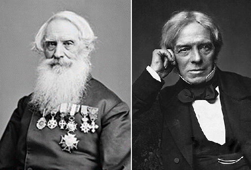
S. Morse develops practical electric telegraphy. M. Faraday discovers electromagnetic induction.
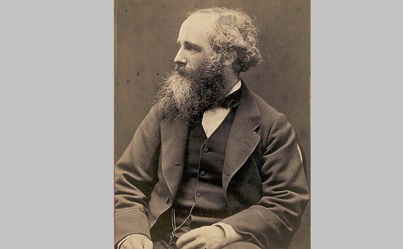
The first transatlantic telegraph cable is completed (1958). J. Maxwell develops EM theory (1860s).
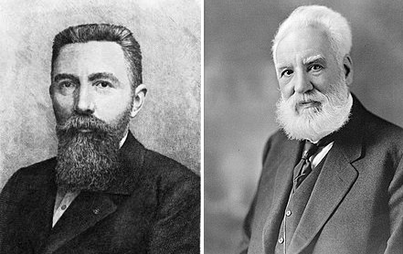
É. Baudot develops a practical telegraph code. A. G. Bell invents the telephone.
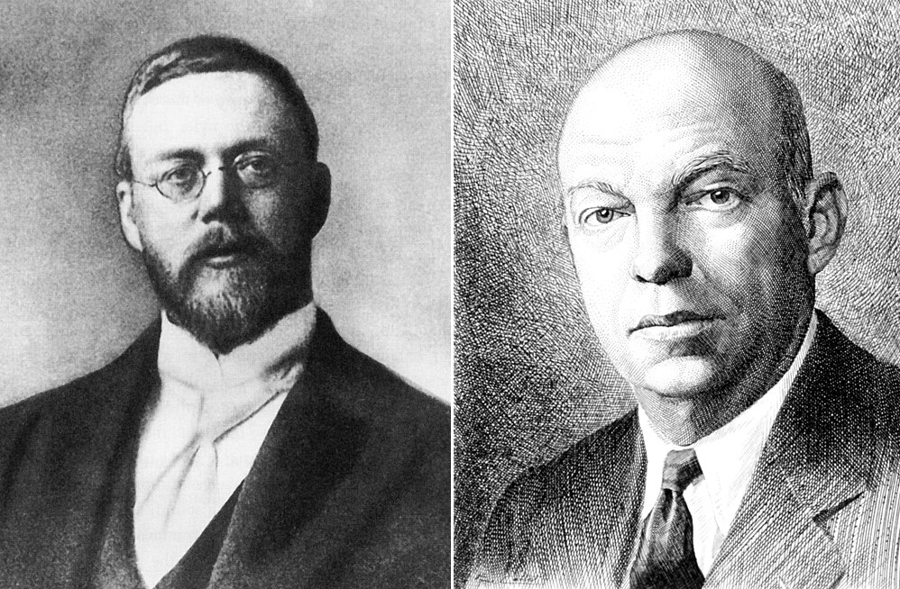
Transcontinental telephone service expands. R. Fessended and E. Armstrong develop AM and FM radio.
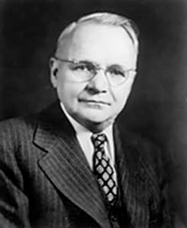
H. Nyquist formulates foundational results on sampling and the conditions for transmitting signals without intersymbol interference.
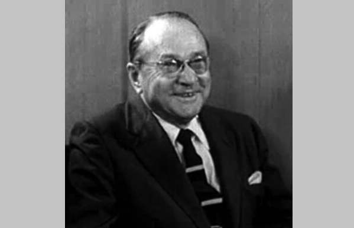
V. Zworykin advances electronic television technology with the iconoscope camera tube.
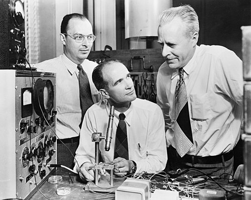
J. Bardeen, W. Brattain, and W. Shockley invent the transistor, transforming electronic circuits.
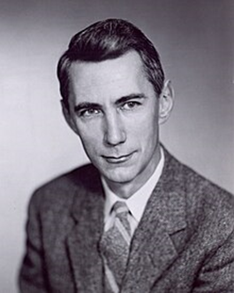
C. Shannon develops Information Theory, establishing a modern mathematical foundation for digital communication.
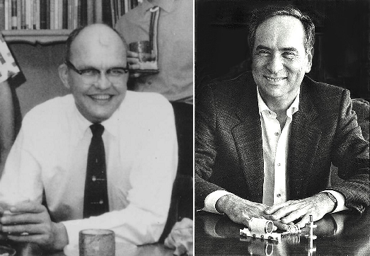
J. Kilby builds the first working integrated circuit. T. Maiman demonstrates the first working laser.
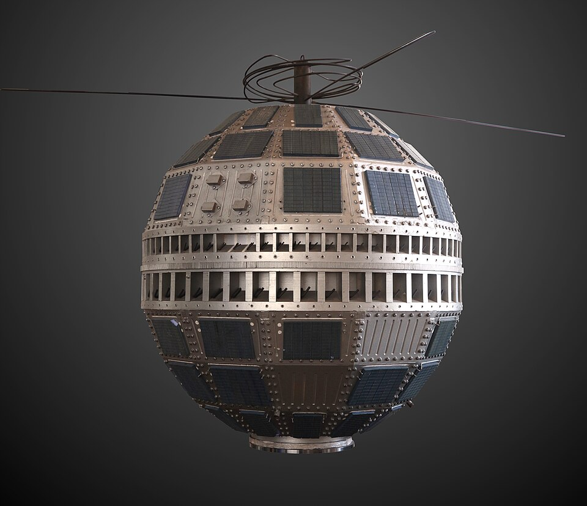
The first active communications satellite, Telstar 1, relays television, telephone, and data signals across the Atlantic.
Fiber optics, cable, LANs, cellular networks, satellites, and high-speed digital systems connect people and devices worldwide.
How does it work? What are the main principles and techniques?
Four essential elements work together to deliver information
Transmitter design must use limited resources efficiently:
Transmission powerBandwidthTimeSpace and antennasComputationInfrastructureCommunication schemes balance these resources, often through engineering trade-offs.
Constructing the transmitted signal and processing the received signal rely on concepts from signals and systems—the foundation developed in this course.
Systems can be described along several independent dimensions
Analog: Continuous signals, often transmitted using analog modulation such as AM and FM.
Digital: Discrete information (bits) transmitted using digital modulation.
Wired: Electrical cable or optical fiber.
Wireless: Propagation through free space, air, water, and other media.
Single-user: Point-to-point communication.
Multi-user: Broadcasting or multicasting.
Uplink and downlink; communication may be full-duplex or half-duplex.
Other classifications include bandwidth, range, and transmit power.
The main focus of this course—and a foundation for understanding digital systems
To understand communication techniques, we first develop the tools of signals and systems, then apply them to communication systems.
Mathematical analysis and hands-on implementation
The course involves a substantial amount of mathematics to model and analyze communication schemes.
You will implement communication schemes using GNU Radio and software-defined radios (SDRs).
Where learning happens and how your work is evaluated
The topics build from signal foundations toward communication techniques
On average, students who attended lectures scored 10.6% higher than students who did not attend.